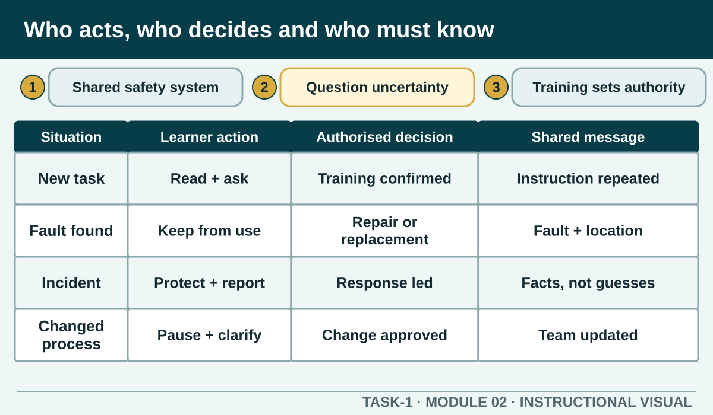

Understand how workplace duties, learner responsibilities, training, consultation and reporting combine to protect people in a hospitality environment.
Learning intention
What success looks like
Distinguishes learner action from authorised decisions
Includes training, supervision and clear communication
Rejects time pressure as permission to improvise
Does not invent a local escalation procedure
Core ideas
Build the complete picture
1
Safety is a shared workplace system
2
Follow instructions, but question unsafe uncertainty
3
Training and authorisation define what you may do
4
Consultation turns observations into better controls
Visual explanation
Who acts, who decides and who must know

Three connected columns show Learner actions, Responsible-person decisions and Shared communication. Scenario arrows for training, faulty equipment, incident and procedure change demonstrate how responsibility moves without being abandoned.
Worked example
Training and authorisation define what you may do
Hospitality workplaces contain tools, heat, electricity, chemicals and manual tasks that require correct instruction. A demonstration or online video can build understanding, but practical use still depends on the authorised local equipment, training and supervision. Never assume that watching a procedure gives permission to perform it independently.
Observed evidence: A learner is asked to prepare equipment for a fictional kitchen task and notices that the appliance model differs from the one demonstrated in class. The controls and attachment do not match their training. Decision and reason: They decide not to experiment because familiarity with a similar appliance is not authorisation. Safe action: They leave it unpowered, keep the setup incomplete and explain the exact difference to the teacher. Result: The teacher selects an authorised alternative and adjusts the work sequence without exposing another learner. Next check or record: Before starting, the learner confirms the alternative's condition, demonstrated method and supervision requirement, then records the equipment change factually.
Question the room
Which action best demonstrates a learner taking reasonable care?
Using unfamiliar equipment alone so the group is not delayed.
Following the demonstrated method, keeping the area controlled and reporting a fault before use.
Leaving a hazard for the next class because staff hold all responsibility.
Apply
Kitchen hazard hunt
The pictured training kitchen has been deliberately staged with eight problems before a practical begins. No equipment is operating and no person is at risk. Treat it as a visual inspection, not permission to recreate the scene.
Inspect the whole photograph before selecting anything.
Find the eight staged problems.
For four hazards, record who or what could be harmed, the immediate safe response and who must be told.
Compare with a partner and resolve one difference by referring to the lesson, not by guessing.
Exit ticket
Action · evidence · next step
A learner is asked to use equipment they have not been shown while the kitchen is under time pressure. Explain the responsibilities of the learner and responsible person, the communication required and the safe next action.
One action I would take
The evidence I would check
The person or source I would confirm with
My next improvement
1 of 8
Speaker notes and delivery prompts
Open with this purpose: Understand how workplace duties, learner responsibilities, training, consultation and reporting combine to protect people in a hospitality environment.
Use Safety is a shared workplace system to connect prior learning to the first observable workplace decision.
Model Training and authorisation define what you may do by walking through this supplied example: Observed evidence: A learner is asked to prepare equipment for a fictional kitchen task and notices that the appliance model differs from the one demonstrated in class. The controls and attachment do not match their training. Decision and reason: They decide not to experiment because familiarity with a similar appliance is not authorisation. Safe action: They leave it unpowered, keep the setup incomplete and explain the exact difference to the teacher. Result: The teacher selects an authorised alternative and adjusts the work sequence without exposing another learner. Next check or record: Before starting, the learner confirms the alternative's condition, demonstrated method and supervision requirement, then records the equipment change factually.
Ask: Which action best demonstrates a learner taking reasonable care? Confirm the strongest response as Following the demonstrated method, keeping the area controlled and reporting a fault before use..
Listen for this misconception: Avoiding delay does not justify working outside training or supervision.
Move into Kitchen hazard hunt, then collect the saved response and finish with the source boundary: Authorised source note: Source basis: signed TAS, authorised Protecting Yourself and Others material, Cycle 1 WHS learning and current SafeWork NSW principles. Local emergency contacts, consultation channels and incident forms remain Teacher to confirm.